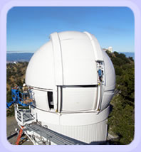
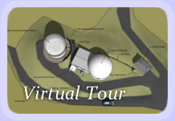

Since 1995, our group has discovered 115 Jupiter-like and Saturn-like planets orbiting nearby stars. Our survey began at UCO/Lick Observatory on Mount Hamilton in Northern California and has expanded to the world's largest telescopes. These discoveries leave bare an ancient question:
Are other Earth-like planets common?
No one knows.
 To search for Earth-like planets, we are currently constructing the Automated Planet Finder telescope atop Mount Hamilton. The telescope will be a 2.4 meter fully-automated telescope equipped with a high resolution spectrograph that has been optimized for precision Doppler measurements. The telescope and spectrometer, used nightly without alteration, will enable a Doppler precision of 1 m/s. Stars orbited by rocky planets in close orbits will wobble with a speed of more than 1 m/s at the short period of the planet. Thus, nightly observations on this dedicated telescope offers a unique opportunity to detect rocky, Earth-like planets. The new telescope will target nearby stars, within 100 light years, and observe them every night for 6 months to detect planets of Earth-like masses. The proven Doppler technique for discovering planets is limited by the few nights available on large telescopes for planet hunting.

The new Automated Planet Finder Telescope will be entirely robotic, making independent, intelligent decisions each night about which stars to observe, what data quality is optimal, and whether a planet is nearly detected. From May through October, the weather is 90% clear at Lick Observatory offering the opportunity to obtain Doppler measurements of the candidate rocky planets nearly every night. The continuous Doppler strings of the Rocky Planet Finder permits the detection of planets of 1-20 Earth masses.
Earth-like planets orbiting in the habitable zone (where water is liquid) can then be searched for signals from intelligent civilizations. We will search for radio transmissions from the newly discovered worlds, using the world's largest radio telescopes.
The Automated Planet Finder telescope and spectrograph are being partially funded by a combination of grants from the U.S. Naval Observatory and NASA. Funds to complete the telescope and to carry out the search itself are still needed. If you would like to contribute to this important and historic work please visit our philanthropy page.